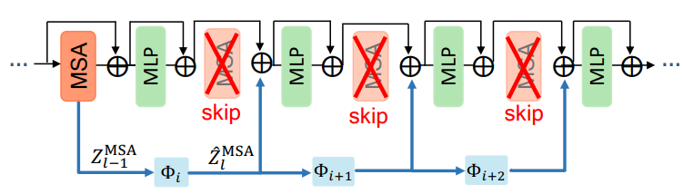
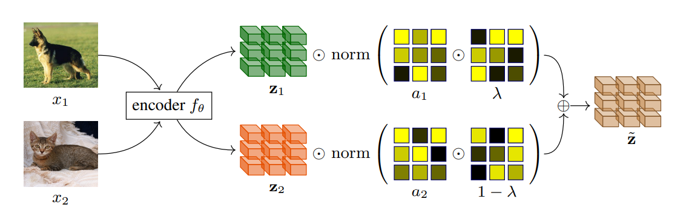
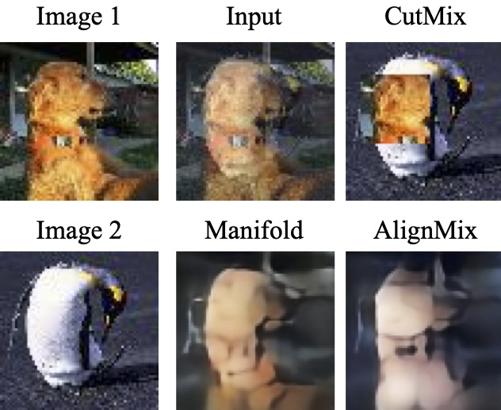
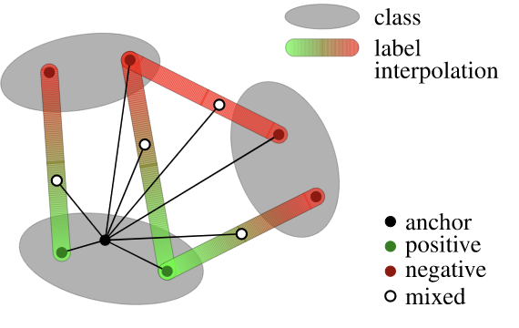
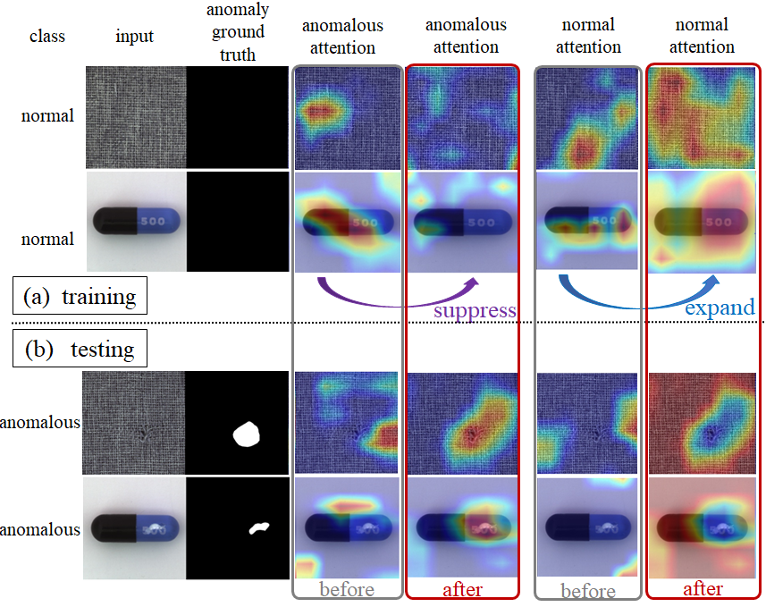
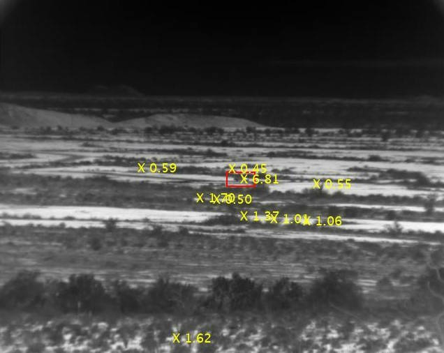
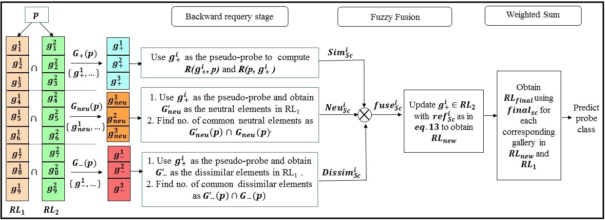

|
News
July 2023: Attending the ICVSS Summer School in Sicily
January 2023: SkipAT released on arXiv
September 2022: Attending the ELLIS Video Sympsium (invite only) in Amsterdam
June 2022: Starting internship with Video Efficiency team at Qualcomm AI Research in Amsterdam
May 2022: MultiMix released on arXiv
February 2022: AlignMixup is accepted to CVPR 2022
January 2022: Metrix is accepted to ICLR 2022
December 2021: Teaching Deep Metric learning course at MathSTIC
September 2021: Attending the ELLIS doctoral symposium in Tubingen
December 2020: Started my PhD at INRIA
|
|

|
Skip-Attention: Improving Vision Transformers by Paying Less Attention
Shashanka Venkataramanan, Amir Ghodrati, Yuki M. Asano, Fatih Porikli, Amirhossein Habibian
arXiv, 2023
paper/
bibtex
|
|

|
Teach me how to Interpolate a Myriad of Embeddings
Shashanka Venkataramanan, Ewa Kijak, Laurent Amsaleg, Yannis Avrithis
arXiv, 2023
arxiv /
bibtex
|
|

|
AlignMixup: Improving Representations By Interpolating Aligned Features
Shashanka Venkataramanan, Ewa Kijak, Laurent Amsaleg, Yannis Avrithis
CVPR, 2022
arxiv /
HAL /
bibtex /
code
|
|

|
It Takes Two to Tango: Mixup for Deep Metric Learning
Shashanka Venkataramanan, Bill Psomas, Ewa Kijak, Laurent Amsaleg, Konstantinos Karantzalos, Yannis Avrithis
ICLR, 2022
arxiv /
bibtex /
code /
video /
slides /
poster
|
|

|
Attention Guided Anomaly Localization in Images
Shashanka Venkataramanan, Kuan-Chuan Peng, Rajat Vikram Singh, Abhijit Mahalanobis
ECCV, 2020
paper /
bibtex /
arxiv /
teaser video /
main video
|
|

|
Target Detection in Cluttered Environments using Infra-red Images
Bruce McIntosh, Shashanka Venkataramanan, Abhijit Mahalanobis
ICIP, 2020
arxiv /
bibtex
|
|

|
Dictionary alignment with re-ranking for low-resolution NIR-VIS face recognition
Sivaram Prasad Mudunuri*, Shashanka Venkataramanan*, Soma Biswas
IEEE Transactions on Information Forensics and Security, 2019
paper /
bibtex /
code
|
|
{kind=link}